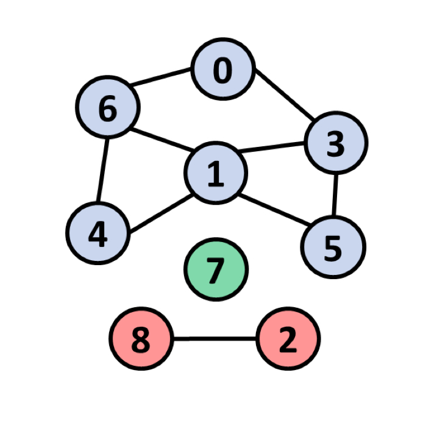

|  |
DFS Visualizer |
Visualizing Depth First Search Algorithm which is an algorithm that traverses or searches tree data structures and graphs. The algorithm starts at the root of a tree and follows each branch as far as it can, then backtracks until it encounters an unexplored path, and explores it. In simple words, depth-first search starts by the exploration of the graph to its deepest point. When the deepest point is reached, it backtracks to a previous unex- plored neighbor. This process is then repeated until the whole graph is explored. If an isolated vertex is identified to be unvisited by the end of the process, DFS would be carried again starting from that vertex - Demo